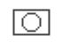

Photographs

Photographs may be any georeferenced still image.
Normally they are photographs taken of the bottom using a slide camera.
The location of each photograph will be indicated by a small camera icon,
similar to the above.
To view the actual photo, click on the icon and select the Photos
tab in the data display panel on the left.
Often the photos will be in a much higher resolution than the data display panel will fit.
Click on the photo image in the data display panel to view the photo at full resolution in a
new window.
Click with the right mouse button on the photo image in the data display panel to
switch between full resolution and sized to fit. At full resolution scroll bars will appear,
if required, to allow you to view any part of the image.
Click with the middle mouse button on the photo image in the data display panel to
switch between full and half resolution versions of the image.
Loading
Geographic bounds
You may restrict the photos to those that are within a particular area.
Enter the north, south, east and west latitudes and longitudes.
Any photos which are within the region you defined will be loaded.
If the region has zero size (eg all bounds are zero) it will be ignored
and all photographs in the database will be loaded.
Load
The Load button will load all the photos
which fall within the region into the display area.
Cancel
The Cancel button will be available between when you press the Load button
and when the photos are displayed. Pressing the Cancel button will abort the
load, but will not remove any already loaded data.
Remove
The Remove button will remove the photos loaded by the current region.
Remove All
The RemoveAll button will remove all photos from the display.
Last modified: Fri 05 March 2004